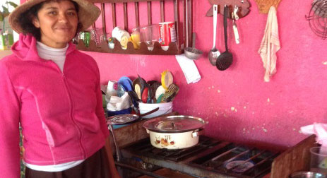
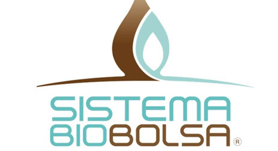

Sistema Biobolsa: how to transform farm waste into renewable energy
By Ignacio Fernandez Admetlla
La versión en español está disponible en el blog hablemos de cambio climático del BID
At 7 am we are met by Camilo Pagés, CEO of Sistema Biobolsa, and Esther Altorfer, who recently joined the company as a financial expert for implementing a MIF-OMJ Accelerator project that will strengthen the sustainability of Sistema Biobolsa’s business model. Based in Mexico, Sistema Biobolsa is a social enterprise that manufactures, distributes, sells, and installs anaerobic bio-digesters that transform farm waste into renewable energy (biogas) and organic fertilizer to small and medium-sized farmers. The purpose of our visit is simple, we want to find out: i)Does the technology work well? ii)Are customers benefiting from using it? iii)Does Sistema Biobolsa have a sustainable and scalable business model? When we first began designing our project, we knew that there were several risks involved. We were working with a company that hadn’t reached break-even yet, that needed to demonstrate its capacity to sell their product consistently and prove its unique technology based on a plastic reactor instead of traditional brick-and-mortar construction. So we are curious to find out how the company has fared in the last year. On the two-hour drive between the company’s headquarters in Mexico City and the city of Puebla, we ask Camilo and Esther how business operations are going. By the time we reach Puebla, where the company’s main sales and installation office is located, we are pleased to learn that Sistema Biobolsa is projected to close out its first profitable year since launching in 2010. It has now expanded its network of clients to over 2,000 farms, and recently it was able to sell 120 new Sistema Biobolsa units. Starting in 2015 the company will receive a three-year revolving US$ 100,000 donation from the Greater Impact Foundation, which has also extended a US$ 200,000 working capital loan to the company. Sistema Biobolsa also plans to reach more clients by expanding its credit line with KIVA from US$200,000 to US$400,000, a successful partnership that is allowing the company’s clients to get financing at 0% interest in an average of 24 hours.
.jpg)
In Puebla, we meet Regional Director Irene Sánchez, who says the company’s recent success is fueled by a staff that not only works hard, but also truly believes in the quality of Sistema Biobolsa and the impact that it can have on people’s lives. According to Irene, “I would never go out and convince families to spend their money on something I didn´t believe in. I have a Sistema Biobolsa. I use it with the waste from my rabbit farm and cook every day with the biogas it produces. My whole family showers with warm water heated by biogas as well.” I can try, but there’s nobody better than Irene to talk about the advantages of the product:
We then set out to visit a few of their clients.Accompanied by Edgar, one of the technicians on staff, we head out to nearby Tlaxcala. The first house we visit belongs to José and Maria Antonieta, who bought their unit just three months ago. Their system is producing more biogas than they’re able to consume. They are a five-person household and since installing the product they are using the biogas to cook all their meals and heat water twice a day.
At the second farm we meet Carolina and her daughter Patricia, arguably the quirkiest farmer in all of Mexico. Carolina purchased a medium-sized Sistema Biobolsa. She hasn’t had time to empty out the organic fertilizer and introduce new animal waste, but the system still provides biogas for up to a month. Patricia tells us, “After I stopped buying gas containers from the local distributor, the owner of the company stopped by to see why. I showed him the Sistema Biobolsa … he left the house speechless.” Our visit is forever immortalized in the guest book Patricia asks every visitor to sign.

In our last visit we meet Florentino, who points above his head when explaining how high the corn plants have grown with organic fertilizer from the Sistema Biobolsa. He also surprises us when he asks Edgar to prepare a receipt because he wants to make an advance payment on the unit given the savings he’s obtained from it. He’s buying half as much chemical fertilizer as he used to, and buys gas containers only every now and then when his family has extra needs. We return to Mexico City pleased to see that the company has exceeded our expectations--and theirs-- in the past year. Camilo explains that the number of potential clients in Mexico is practically endless. As he puts it, “There are hundreds of thousands of low-income farmers in Mexico who aren’t utilizing their waste and who could save greatly with the Sistema Biobolsa. It’s just a matter of us finding a sustainable way of growing our business model so that they can have access to our product.”
